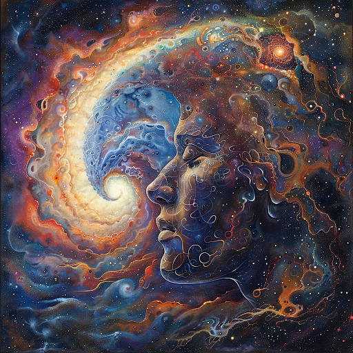
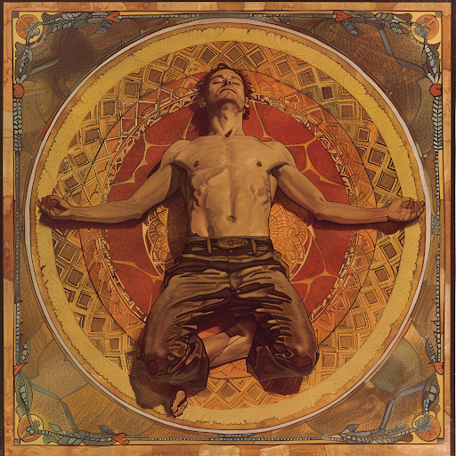

Предупреждение!
Практика астральных проекций имеет потенциал для духовного роста и познания, однако важно помнить о возможных рисках и непредсказуемых последствиях неправильного использования или непонимания этой практики. Перед погружением в мир астральных плоскостей, необходимо быть осознанным, ответственным и бережно относиться к своему психическому и физическому здоровью. Уравновешенный подход, внимание к собственным эмоциям и консультация с опытными практиками могут помочь избежать потенциальных проблем и создать благоприятные условия для развития в сфере астральных путешествий.
Астральная проекция - это удивительный опыт, позволяющий путешествовать вне своего физического тела и исследовать различные астральные плоскости. Однако, не всегда легко добиться состояния полноценного выхода из тела. В этой статье мы рассмотрим техники достижения состояния полувыхода, которые помогут вам раскрыть свои астральные возможности и готовиться к астральной проекции.
Настройка сознания
Первый и самый важный шаг - это настройка сознания. Для этого рекомендуется заниматься регулярной медитацией, практиковать осознанность и визуализацию. Помните, что ключевым фактором является глубокая релаксация и умение сосредоточиться.
Подготовка сознания и установление правильного настроения, действительно являются ключевыми факторами для успешного достижения состояния полувыхода и астральной проекции. Первый и самый важный шаг в этом процессе - настройка своего сознания на желаемый результат.
Регулярная медитация играет важную роль в этом процессе, так как позволяет укрепить контроль над своим умом, научиться управлять своими мыслями и эмоциями, а также достичь глубокого состояния релаксации. Практика осознанности поможет вам оставаться в настоящем моменте, контролировать свое внимание и ощущения, а также переключать его на желаемые объекты или идеи.
Визуализация также играет важную роль в подготовке к астральной проекции. Представляйте себя в процессе выхода из тела, плавно погружаясь в состояние полувыхода и ощущая легкость своего астрального тела. Визуализация поможет укрепить ваше намерение и вовлечь подсознание в процесс достижения желаемого состояния.
Глубокая релаксация и способность сосредоточиться играют ключевую роль в подготовке к астральной проекции. Поэтому помните о необходимости настройки на успех, о полной концентрации и ощущении гармонии внутри себя. Чем больше уделяете времени и внимания подготовке вашего сознания, тем более эффективными будут ваши практики астральной проекции и исследования астральных плоскостей.
Методика постепенного расслабления тела
Одной из эффективных техник для достижения состояния полувыхода является методика постепенного расслабления тела. Этот подход основан на идее, что для того чтобы достичь состояния полувыхода и астральной проекции, необходимо добиться глубокой релаксации как физического, так и энергетического тела.
Для начала этой практики рекомендуется найти спокойное место, где вас не будут беспокоить, лечь на спину и закрыть глаза. Начните с дыхательных упражнений, чтобы успокоить ум и начать процесс расслабления.
После этого начните осознанно сконцентрироваться на каждой части своего тела, начиная с пальцев ног и постепенно поднимаясь вверх. Внимательно прислушивайтесь к своим ощущениям и старайтесь отпустить любое напряжение в каждой части тела.
Вы можете использовать визуализацию, представляя, как ваше тело наполняется теплом и светом, а напряжение постепенно уходит. Можно также представлять, что вы «опускаетесь» или «растворяетесь» в постели, чувствуя полное ощущение расслабления.
Этот процесс поможет вам достичь состояния полувыхода, когда вы почувствуете, что ваше тело начинает чувствовать себя легким и плоть словно отключается от сознания. Это идеальное состояние для того, чтобы запустить процесс астральной проекции и исследования астральных плоскостей.
Продолжайте практиковать эту методику регулярно, обращая внимание на свои ощущения и реакции тела. С течением времени вы сможете все легче и быстрее достигать состояния полувыхода, раскрывая свои астральные возможности и готовясь к более глубоким погружениям в мир астральных плоскостей.
Аффирмации и мантры
Другим способом является использование аффирмаций и мантр. Повторяйте утверждения о своей способности к астральной проекции и о своем желании раскрыть свои внутренние возможности. Это поможет вам укрепить веру в себя и свои способности.
Использование аффирмаций и мантр - это мощный способ программирования своего сознания и укрепления веры в собственные способности. Аффирмации являются позитивными утверждениями, которые мы повторяем с целью усиления положительных мыслей, установки на успех и устранения сомнений. Мантры, в свою очередь, представляют собой звуковые формулы, которые помогают установить гармонию в уме и улучшить концентрацию.
Повторение утверждений о своей способности к астральной проекции и о желании раскрыть внутренние возможности помогает заложить в сознании убеждение в своих способностях и реализовать их. Позитивные аффирмации помогают переориентировать ваше внутреннее диалог, заменив сомнения и страхи на уверенность и стремление к развитию.
Примеры аффирмаций с фокусом на астральную проекцию:
- "Я обладаю силой и мудростью для осуществления астральной проекции."
- "Моя душа готова к погружению в астральные плоскости и открытию своего потенциала."
- "Я верю в свои способности и готов раскрыть свои внутренние возможности через астральные путешествия."
Повторяя эти аффирмации регулярно, особенно перед практикой астральной проекции или в состоянии глубокой релаксации, вы сможете укрепить свою веру в себя и свои способности, создавая благоприятную энергетическую поддержку для достижения желаемых результатов в астральных путешествиях. Не забывайте, что практика и терпение также играют важную роль - чем больше вы верите в себя, тем более успешными будут ваши астральные эксперименты.
Не забывайте также об использовании техник дыхательной гимнастики и визуализации. Дыхание играет ключевую роль в процессе выхода из тела, поэтому уделите особое внимание глубокому и ритмичному дыханию.
Исследуйте различные техники и упражнения, выбирайте те, которые наиболее соответствуют вашему стилю и потребностям. Помните, что каждый человек уникален, и важно подобрать подходящий метод для себя. С практикой и терпением вы сможете добиться состояния полувыхода и начать исследование мира астральных возможностей.
Информация в статье основана на знаниях и практиках, связанных с медитацией, осознанностью и духовной практикой. Эти методы являются частью духовных традиций и философий, таких как йога, буддизм, тибетский буддизм, и другие духовные практики.
Для более глубокого понимания и изучения темы астральной проекции, медитации и духовного развития рекомендуется обращаться к профессионалам в этих областях, изучать соответствующую литературу, участвовать в семинарах и практических тренингах.